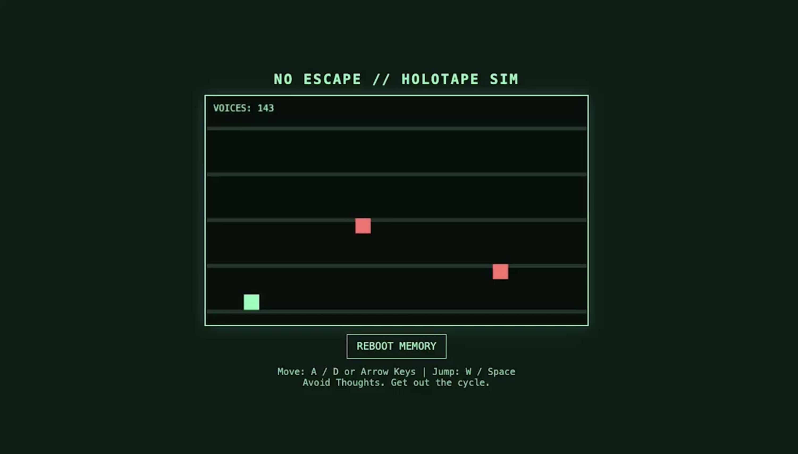
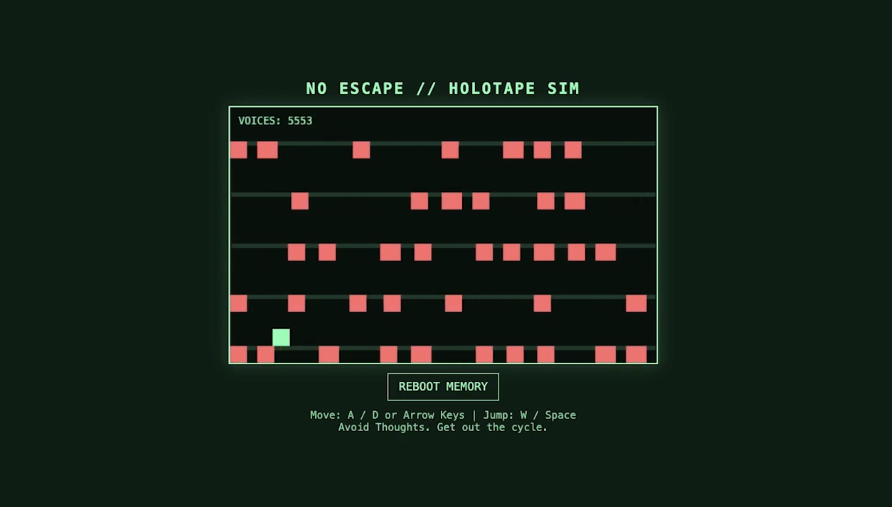
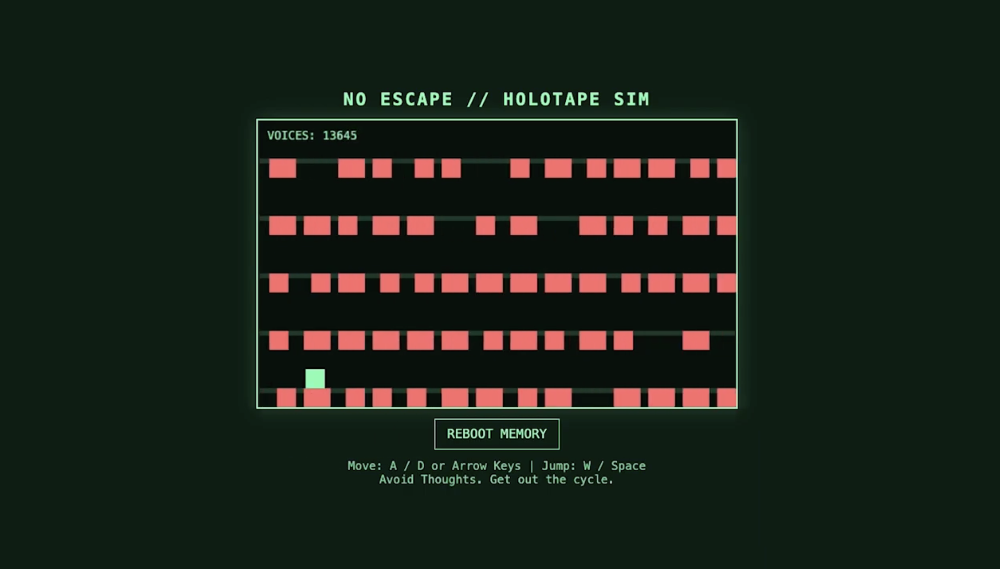

Using sound and interactive media to visualise emotion, tension, and psychological space.



I continued developing my interest in coding and the visual representation of mental health. After producing my HTML based game, I converted the gameplay into a video format to explore how meaning shifts when interaction is removed and the experience becomes observational rather than participatory. This allowed me to focus more closely on atmosphere, pacing and emotional impact.
Within the video the red dots act as a visual representation of intrusive thoughts or “voices” within the experience. Rather than remaining static, they gradually accumulate over time, increasing in density and intensity as the piece progresses. This gradual build up was intentional, reflecting how mental noise and anxiety often begin subtly before escalating into something overwhelming and difficult to ignore. As the dots multiply the screen becomes increasingly crowded, creating a sense of pressure, distraction and cognitive overload. This progression mirrors how intrusive thoughts can intensify in real life, where repetition and persistence make them feel unavoidable and inescapable.
I then developed the audio using Adobe Audition, layering multiple voice recordings and applying echo and reverb effects to construct a dense, distorted soundscape. These overlapping voices were designed to reinforce the visual system, translating internal thought patterns into both sound and image. The echo effect creates a sense of distance and repetition, while also amplifying psychological tension, making the voices feel both present and disorienting.
This work connects closely to my wider interest in visually expressing mental health through sensory experience. I enjoy translating emotional states into visual and auditory systems, particularly feelings that are difficult to describe verbally, such as anxiety, overwhelm and internal conflict. By combining structured visuals with manipulated sound, I aimed to create an immersive experience where emotion is not explained, but felt.
Through this project, I developed a stronger understanding of how time based media can be used to communicate psychological states. It reinforced my interest in creating work that sits between game, film, and sound design, where meaning is constructed through layered sensory experiences rather than direct narrative.